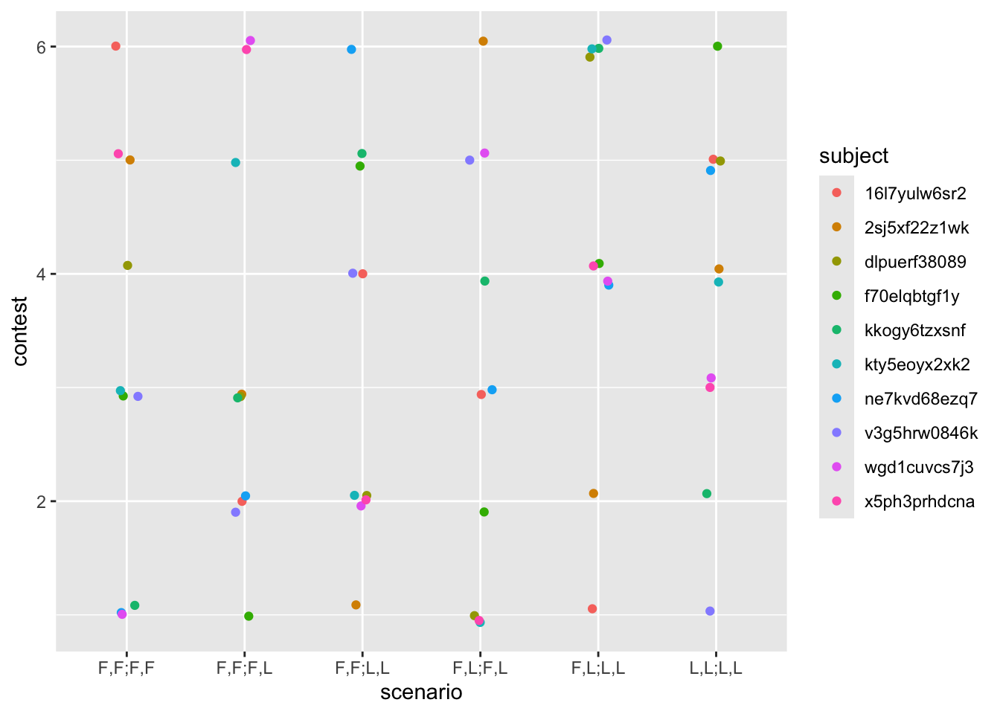
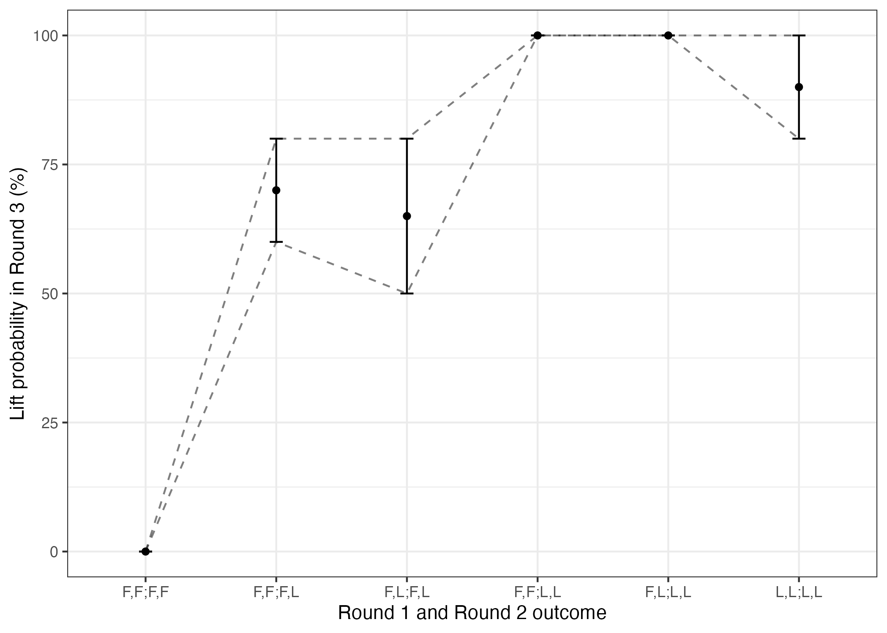

── Attaching core tidyverse packages ──────────────────────── tidyverse 2.0.0 ──
✔ dplyr 1.1.4 ✔ readr 2.1.5
✔ forcats 1.0.1 ✔ stringr 1.5.2
✔ ggplot2 4.0.0 ✔ tibble 3.3.0
✔ lubridate 1.9.4 ✔ tidyr 1.3.1
✔ purrr 1.1.0
── Conflicts ────────────────────────────────────────── tidyverse_conflicts() ──
✖ dplyr::filter() masks stats::filter()
✖ dplyr::lag() masks stats::lag()
ℹ Use the conflicted package (<http://conflicted.r-lib.org/>) to force all conflicts to become errorsReplication of Experiment 1 by Xiang, Vélez & Gershman (2023, JEP:G)
Introduction
My broad research interests include modeling how individuals perceive, represent, and judge potential collaborators’ affordances for collaboration. Xiang, Vélez & Gershman (2023) propose and empirically validate a probabilistic model in which recursively updated inferences of competence and effort (“belief–desire–competence framework”), together with observed outcomes, jointly predict individuals’ judgments of collaborators, across various cognitive tasks which are common within collaboration. In particular, in Experiment 1, their model best predicts participants’ judgments about whether joint activity will succeed, compared to plausible alternative models. I am eager to attempt to replicate this finding to help establish the robustness of this model of collaborator judgment, before I may attempt to extend it in future work.
Experiment 1 involves observing contestants try to lift a heavy box in a set of contests (six total), each containing three rounds. In each contest, there are two unique avatars playing as the contestants. In rounds 1 and 2, each contestant attempts to lift the box by themselves. In round 3, the contestants attempt to lift the box together. In each round, after observing each contestant succeed or fail to lift the box, the participant judges the strength of each contestant (1–10), and for each contestant that successfully lifted the box, the participant judges that contestant’s allocated effort (0%–100%). At the start of round 2, the participant judges each contestant’s probability of lifting the box successfully (0%–100%), prior to observing the lift attempts. At the start of round 3, the participant judges the probability that the contestants will successfully lift the box together. Further, an incentive to the contestants for lifting the box is specified in each round: in the second and third rounds, the specified reward for lifting the box is double that of the first round. Participants are also told that the heavy box had a constant weight across all contests, which effectively requires at least 5 strength points applied (e.g., on average, 100% effort for a contestant with strength 5, or 50% effort for a contestant with strength 10, etc.). Last, participants see a progressively filled-out table of all the lift outcomes during each contest, visible throughout, including when making judgments.


The challenges/opportunities for my learning in this replication project will include: 1) recreating the paper’s proposed (joint effort) model and two alternative (solitary/compensatory effort) models of the probability of joint success in Memo (based on the authors’ pre-existing implementations in WebPPL), and 2) running these models over my newly collected data to attempt to replicate that the proposed model is most predictive of participants’ judgments. (I will also replace the original authors’ data-saving step (a php page) with DataPipe.)
Specifically, I will attempt to replicate that A) when rounds 1 and 2 feature no individual success, participants still judge the probability of joint success in round 3 as non-zero. In addition to this confirmatory analysis, I will attempt to qualitatively replicate that B) participants judge higher probability of joint success as cases of individual success increases, and that the proposed model is the only model evaluated which predicts both patterns A and B. See Analysis Plan below for more details.
NoteLinks
Repository: https://github.com/psyc-201/xiang2023
Original paper: 2023_xiang_effort.pdf (Retrieved on Sep 30, 2025 from velezlab.org)
Hosted experiment: https://psyc-201.github.io/xiang2023/exp/index1.html
Hosted version of this report: https://psyc-201.github.io/xiang2023/writeup/
Methods
Power & Precision Analysis
The original effect size is d = 1.47. To achieve 80%, 90%, or 95% power to detect that effect size, I’d need:
| Target Power | Necessary N | Estimated Power |
|---|---|---|
| 80% | 6 | 81.9866034% |
| 90% | 8 | 94.4324728% |
| 95% | 9 | 97.0458054% |
Collecting 9 participants is completely feasible (with each spending ~16 minutes; see Procedure). To compensate for the original study’s measured effect size being inflated (e.g., due to publication bias), 15 participants should be necessary for sufficient power for the primary effect of interest, and this count is also feasible.
However, for the sake of qualitatively replicating the overall pattern of estimated probabilities increasing as scenarios feature more successful individual lifts (monotonic increase in probability from left to right in Figure 3C; which I’ve labeled “B” above), and that the joint effort model is the only considered model which captures both the key effect and this pattern, I find it prudent to retain the same sample size so that I may attempt to replicate the original qualitative finding with comparable precision. (Targeting higher precision could potentially counter aforementioned effect inflation present in the original paper, but as it is unclear how to quantify the necessary precision for these qualitative analyses, targeting the original precision appears to be a sensible option.)
Further, in the original study, given 50 participants, the key effect appeared quite robust, with the CI for the data from scenario “F,F;F,F” being quite far from the line LiftProbability=0 (see Figure 3C), suggesting that with 50 participants, we are nearly guaranteed to replicate this effect if it is true.
Given my understanding of course funding available, collecting 50 participants is feasible.
Planned Sample
Based on my power and precision considerations, I will collect 50 participants on Prolific, following the specific self-exclusion strategy reported below.
I will follow precisely the data collection strategy in the original Experiment 1, as described on p. 1569:
“Participants’ demographic information was not collected. Participants completed a comprehension check before they moved on to the experiment. They were not allowed to proceed until they answered all the comprehension check questions correctly. … To ensure data quality, we included two attention-check questions in the experiment. Participants who failed one attention check were warned immediately to pay closer attention. Participants who failed both attention checks were asked to leave the experiment and they were not counted among the 50 participants we recruited. A total of 10 participants failed one attention check, and we did not exclude their data in our analysis.”
Materials
I will follow precisely the original Experiment 1. The materials for the experiment are available at https://github.com/jczimm/competence_effort. This repository is a clone of the authors’ own code repository for the paper, with the experimental task code copied from the authors’ hosted version linked in their README.md file.
See Procedure below for more details and a figure from the paper visualizing the task.
Procedure
I will follow precisely the original Experiment 1, as described on pp. 1569-1570:
“… participants provided informed consent prior to the experiment. … Participants observed six contests between different pairs of contestants (see Table 2 for a description of the contests; the order was randomized). In each contest, the contestants were given three attempts to lift a box, corresponding to three rounds. In the first two rounds, the contestants tried lifting the box themselves. The reward for lifting the box was $10 in Round 1 and $20 in Round 2. In the third round of each contest, the two contestants tried to lift thebox together for a reward of $20 each. Participants first saw the lift outcome of Round 1 and made strength judgments (1–10; 1 means extremely weak and 10 means extremely strong) and effort judgments (0%–100%) for each contestant. For Rounds 2 and 3, they predicted the probability of the contestants lifting the box (0%–100%) before seeing the outcome, then observed the actual outcome and made strength and effort judgments. Note that participants made effort judgments only when the outcome was Lift. Participants were informed that the weight of the box was always the same and equivalent to a strength of 5 (i.e., an average contestant with strength 5 exerting all of their efforts would be able to lift the box). Participants also saw a table of all the previous outcomes when making their guesses. Figure 2 shows an illustration of the task.”


To summarise: there are six contests, each with three rounds, and multiple judgments during each round.
According to the consent form in the original experiment, the study is estimated to take 15 minutes. Accordingly, adhering to Prolific’s recommended rate of compensation ($12/hr), base compensation will be $3.
For determining bonus compensation, I will follow precisely the original scheme as described on p. 1569:
“Participants received … a potential bonus payment of up to $1. The amount of bonus they received was equal to the probability they put on the realized lift outcome on a randomly picked round.”
Analysis Plan
I will conduct a one-sample t test on the participants’ reported round-3 lift probability for scenario “F,F;F,F” (i.e., each contestant failed to lift the box in both rounds 2 and 3), with the null hypothesis that the true lift probability is zero. See Planned Sample for the data exclusion rule.
In addition to this confirmatory analysis, I will attempt to replicate the qualitative pattern that participants judge higher probability of joint success as cases of individual success increases. I will also reimplement their proposed model (joint effort) and alternative models (solitary effort and compensatory effort) in memo (see Differences from Original Study) and attempt to replicate that the proposed model is the only model evaluated which predicts both the qualitative pattern and the other result (that participants estimate round-3 lift probability as non-zero after two rounds of failures). See original paper’s Figure 3C and accompanying explanation, pp. 1570-1571; I will recreate that figure and attempt to replicate that explanation on my own data. Further, I will also estimate and statistically test the difference in the probability judgments plotted in Figure 3C between the original data and my new data.
I must note that while the t test alone does not justify the paper’s central claim that the joint effort model is qualitatively predictive, in the absence one such statistical test, this t test is a good alternative: this test demonstrates one of two key behavioral effects (p. 1570) which the model was qualitatively evaluated to predict. (In other words, I should attempt to replicate this behavioral effect before I could try to qualitatively replicate that the joint effort model is the only considered model which can predict it.)
Differences from Original Study
The sample will differ in that the original was from Amazon Mechanical Turk, while the new sample will be from Prolific. Accordingly, base compensation will be $3 instead of $2.
The only difference in setting is that the task will be hosted at https://psyc-201.github.io/xiang2023/exp/index1.html rather than https://gershmanlab.com/experiments/yang/toc/Experiment/index1.html.
The only known visible differences in procedure are that “HIT” will be renamed “submission” in task instructions, and the consent form will be updated according to the details provided by the UCSD course PSYC 201A.
While the confirmatory analysis will be rerun using the original R code provided by the authors, for the qualitative replication attempt I will use a reimplementation of the joint effort model and the alternative models (solitary effort and compensatory effort models) in memo, which were originally written in WebPPL. I expect that reimplementation of the continuous probabilistic models in WebPPL as discrete probabilistic models in memo will produce higher estimate precision as the model predictions will be deterministic, rather than stochastic. (I will discretize the distribution at a high resolution such that there is no systematic difference in estimates.)
I do not anticipate that these differences are meaningful regarding the original paper’s claims and the analyses of interest.
Reliability and Validity
The key measure is the participant’s report of the probability of the contestants successfully lifting the box in round 3. For this measure, the latent construct of interest is the participant’s internal estimate of lift probability.
The reliability of this measure is unclear, given a lack of referenced evidence of the reliability of an explicit probability judgment. However, in the current model of the participant’s judgment as Bayesian inference, I infer that the reliability is negatively correlated with the noisiness of the participant’s internal translation from implicit posterior distribution (over lift probability) to explicit report; in other words, this measure can be no more reliable than the reliability of participants’ own estimation of the expected value of their internal posterior distribution. As there may also be individual differences in the noisiness of this translation process reliability could be reduced by this.
Likewise, validity is unclear. And following the same logic, I infer that the validity may vary across participants, given that there could be individual differences in the accuracy of participations’ estimation of the expected value of their internal posterior distribution.
Results
Data preparation
The data collected in this experiment will include task-level data:
subjectId,prolificId- pre-set round outcomes (
round1_o,round2_o,round3_o) - pre-set round incentives (
round1_reward,round2_reward,round3_reward) - number of failed attention checks (
attention_sum)
It will also include round-level data:
- contest index (
contest) - round index (
round) - strength (
r1_strength_a/r2_strength_a/r3_strength_a, andr1_strength_b/r2_strength_b/r3_strength_b) - effort (
r1_effort_a/r2_effort_a/r3_effort_a, andr1_effort_b/r2_effort_b/r3_effort_b) - outcomes (
r1_outcome_a/r2_outcome_a/r3_outcome_a, andr1_outcome_b/r2_outcome_b/r3_outcome_b) - probability (
r1_prob_a/r2_prob_a/r3_prob_a, andr1_prob_b/r2_prob_b/r3_prob_b)
The participant self-exclusion criterion will be enforced: we will manually exclude any participants who failed both attention checks but did not self-exclude (i.e., exit the task and return the submission).
Confirmatory analysis
I found/did not find that participants rated the probability of joint success in round 3 as non-zero (t(1) = NaN, p = NaN). See the black point range (data) for scenario “F,F;F,F” under Exploratory analyses.
`stat_bin()` using `bins = 30`. Pick better value `binwidth`.
The red line shows the critical t-value for detecting a statistically significant effect.
Exploratory analyses
I found/did not find that the joint effort model was the only model which qualitatively predicted both that joint success has non-zero probability (the result in confirmatory analysis) and that probability of joint success increases as individual success increases.
| Original (Figure 3C) | New |
|---|---|
  “Note. … Model simulations averaged over 10 runs. Error bars indicate bootstrapped 95% confidence intervals.” (p. 1571) |
 |